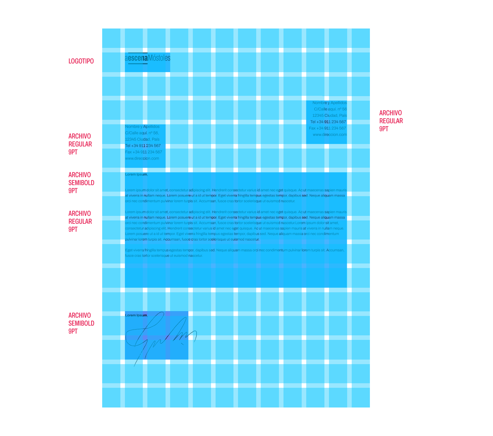
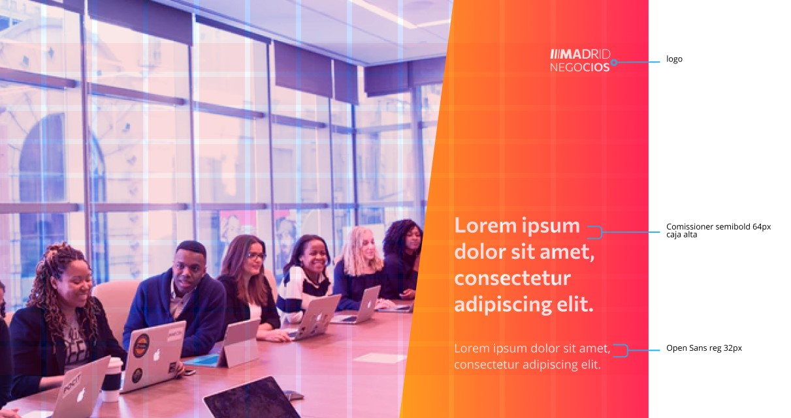

GUÍAS
Guías
En esta página se incluyen las guías y retículas del sistema gráfico de Madrid Opencity para la producción de contenidos.
LOGOTIPO
Retícula
El área de seguridad es la distancia mínima que hay que mantener entre el logotipo de Madrid Opencity y otros elementos gráficos, en este caso el área de protección es la mitad de la altura de la "x" de la tipografía de "Madrid". La posición de logo puede variar dependiendo de las necesidades del soporte, en su mayoría de las veces cuando se trata de una publicación que contiene la pegatina con el degradado a la derecha el logo aparecerá en la parte superior derecha. Si se trata de una fotografía se permite buscar la posición más adecuada sin tapar elementos importantes de esta.
Relaciones y composición
El logotipo forma un bloque compacto, diferenciando el nombre de la marca y el tagline, que solamente existirá en el bloque compacto uno debajo de otro, llegando el tagline al final de línea coincidiendo con la longitud de madrid, siempre ajustado ópticamente.
Color
La marca utiliza unos degradados de colores análogos que le dan sensación de contemporaneidad, el degradado principal es un sutil degradado lineal horizontal, que parte de un morado hasta un azul medio, pudiendo relacionar con el ayuntamiento de Madrid que utiliza el color Azul. existen unos colores sólidos con los que se puede personalizar los degradados, teniendo en cuenta que el color más oscuro siempre empezará por la izquierda. Según el departamento existen unos degradados preestablecidos.
Positivo, Negativo, Reducciones
La marca funciona principalmente en negativo, con la tipografía en blanco sobre uno de los degradados corporativos, ya que de esta forma es mucho más pregnante y se diferencia fácilmente de su competencia, sin embargo existen y se pueden utilizar las versiones en positivo.


Animación marca
La marca aprovecha el uso de la tipografía variable para ensanchar o afinar la tipografía, intensificando la narrativa del Madrid que se adapta a sus ciudadanos.
RETÍCULA APLICACIONES
Papelería
Carta
Se compone en relación a la retícula cuadrada creada de 16 x 12 módulos, respetando el área determinado para cada sección. Los márgenes exteriores siempre van a ser de un módulo.
Descargar aquí plantilla
Sobre
El sobre se compone de 6 x 8 módulos cuadrados, al igual que en la carta se respetará un módulo de margen a cada lado, el logotipo con el tagline se encuentra en la parte superior izquierda ocupando 2 x 2 módulos y los datos en la parte inferior derecha ocupando 3 x 2 módulos.

Tarjeta
La tarjeta se compone de 8 x 11 módulos, de distribución similar a la anterior, un módulo de margen a cada lado, en la parte superior izquierda se encuentra el departamento y el nombre de la persona, que ocupará 5 x 2 módulos, y en la parte inferior derecha los datos de contacto, ocupando 4 x 3 módulos.

Cartelería
Cartel Mupi
el Mupi contiene 20 x 12 módulos, la franja azul en la que se posiciona en texto, ocupa de derecha a izquierda en su parte superior 8 módulos, y en la parte inferior 10, creando así una diagonal como la del las barras del logo. En la parte superior derecha se sitúa el logo con el tagline ocupando 3 x 2 módulos, En la parte mediana se sitúa el departamento y el Título que ocupan 6 x 4 módulos, y en la parte inferior derecha Lugar y fecha, ocupando 4 x 2 módulos.

Cartel Apaisado
El cartel apaisado contiene los mismo módulos que el mupi, pero invertidos, 12 x 20, el logo al tratarse de un módulo más grande ocupará 2 x 1. El departamento y el Titular ocupan 5 x 5 módulos, y la fecha con el lugar ocupan 3 x 1 módulos.

Redes Sociales
Instagram publicaciones
La reticula de la publicación de instagram es de 12 x 12 módulos, reservando como en las retículas anteriores siempre un módulo de margen a cada lado. El titular ocupa 10 x 6 módulos, mientras que la descripción 10 x 3.

Instagram Stories
La historia contiene 20 x 12 módulos, la forma azul esta vez al tratarse de una imágen animada y va a aparecer saliendo desde la derecha hasta el borde izquierdo, va a ocupar todos los módulos de la parte inferior permitiendo ver un pico de la imágen que ha solapado, es decir en la parte inferior va a ocupar los 12 módulos, y en la superior 9.El titular ocupa 7 x 5 módulos en la parte central baja, permitiendo variar estos dependiendo de las necesidades del diseño en relación a titulares más cortos o largos. La descripción ocupa 7 x 2 módulos.

Audiovisual
Información
La retícula audiovisual se compone de 13 x 10 módulos, cambiando los márgenes inferiores y superiores por un módulo más amplio, la pegatina en la que se sitúan los datos ocupan 4 módulos en la parte superior y 5 en la parte inferior. El logo ocupa 1x1. EL titular 3 x 3, y la descripción 2 x 1 módulos.
Banner
La retícula de la pantalla del banner de es 15 x 10 módulos, ocupando la pastilla 8 x 1 módulos en la parte inferior izquierda.
Noticias
Igual a la del banner, de 15 x 10 módulos, Los cuadrados de los videos ocupan 7 x 7 módulos, guardando el espacio entre uno y otro de un módulo. la pastilla que contiene el nombre debajo de los videos ocupa el mismo largo, 7 módulos y la altura de ½ módulo. El icono de “en directo”, aparecerá en la parte superior izquierda, guardando el margen de 1 módulo con el lado vertical izquierdo, sin embargo se posicionará alineado al final del primer módulo horizontal.